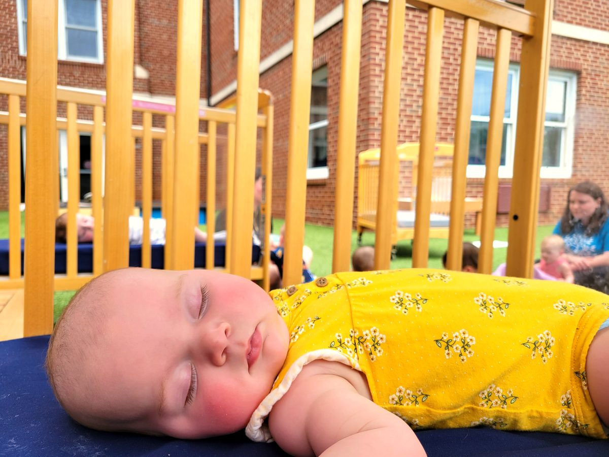

About Us
Thirty years of
caring for what
matters most.
Since 1995, the Davis Center has been a place where children are known by name, families are treated like neighbors, and every day is built around helping kids thrive.
More than a childcare center.
The Davis Center for Child Development exists to provide exceptional care and early learning in a nurturing, faith-filled environment. We believe every child deserves consistency, warmth, and the kind of early experiences that set them up for a lifetime of growth.
As a 501(c)(3) non-profit, we answer to families — not shareholders. Every dollar we receive goes back into the people, environment, and programming that make this place what it is.
We keep our rates at or below the Knoxville area average because we believe quality childcare should be accessible to working families. That's a commitment, not a marketing line.
Schedule a tour

Faith that shows up in
how we care.
The Davis Center grew out of a faith community that believed caring for children was a calling, not just a service. That foundation still shapes everything we do — how we treat each child, how we work alongside families, and why we stay committed to accessibility.
We welcome all families, regardless of background or belief. Our faith doesn't divide — it motivates us to serve well and love generously.
"Rooted and established in love."Ephesians 3:17
Years in the Knoxville community.
The Davis Center opened in 1995 with a simple belief: that children deserve the very best care, and that families deserve a place they can trust. What started as a small operation has grown into a center with seven classrooms, an experienced team of educators and caregivers, and a community of families who've been with us for decades.
Many of the children who came through our doors have since brought their own children. That's the highest compliment we know.
Meet our team
Rooted and established in love. Ephesians 3:17